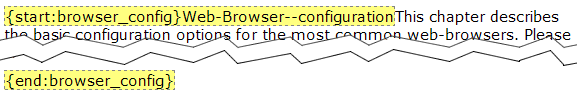

1.13.6. Creating index entries
Docmenta can automatically generate a back-of-the-book index during the export process. You have to do two things:
- Enable the index creation in your output configuration (see Section 2.6.2.1.1, “General output settings”).
- Insert index terms throughout your documentation as described below.
Inserting index terms
You need to insert one index term element for each reference that is to appear in the publication index. You place an index term at the location where the reference from the index is to land. Perform following steps to insert an index term at a defined text position:
- Open the content editor for the content node where the index term is to be inserted (see Section 2.3.8, “Editing content” on how to open the content editor).
- Insert the index term at the text position where the reference from the index is to land. For example, in the following screenshot, the term "Web Browser" was inserted at the end of the first sentence.
- Select the index term
 and apply the index style "Term" from the styles drop-down listbox
and apply the index style "Term" from the styles drop-down listbox  as shown in the following screenshot:
as shown in the following screenshot:
Figure 1.13.30. Marking text as an index term
After having applied the index style, the index term is highlighted in the content-editor with yellow background color and dashed border-line:
Figure 1.13.31. Highlighting of index terms
By default the inserted index terms are not visible in the preview area. However, you can activate the visibility of the index terms in the preview area by checking the "Show index terms" menu item in the toolbar menu (see following screenshot):
Figure 1.13.32. Enabling index term visibility
In any case, the index terms will not be visible in the exported publication at the positions were they have been inserted.
If you export the publication now, and you have activated the index generation in the output configuration, then the generated index would contain following entry (in this example, the paragraph that contains the index term "Web Browser" is on page 3):
Figure 1.13.33. PDF preview of generated index
Multiple index terms
To supply more than one index term at the same text position, multiple index terms can be separated by a pipeline character (|). In the following example, the terms "Web-Browser" and "Internet Browser" are inserted at the same position:
Figure 1.13.34. Paragraph with multiple index terms at the same position
Multi-level index terms
Entries in an index can have up to three levels. This permits grouping of subtopics under a keyword. In the following example, the term "Download" is grouped as a subtopic of "Firefox", which is itself a subtopic of "Web-Browser".
Figure 1.13.35. Example of multi-level index terms
As can be seen in this example, a keyword and its subtopic have to be separated by a double-dash (--). The generated index looks as follows:
Figure 1.13.36. Generated index with multi-level index terms
Note that there is no page reference on "Web-Browser" itself. It would have one only if there were another index term "Web-Browser" without a subtopic.
"See ..." index entries
To indicate that an index term is a synonym for another index term, place a "{see: ...}" expression at the end of the index term. In the following example, the index term "WWW" is listed as a synonym for "World Wide Web":
Figure 1.13.37. Example of "see" index term
Note: An index term can at most have one "{see: ...}" expression. Placing more than one "{see: ...}" expression at the end of an index term will lead to a formatting error.
"See also ..." index entries
To insert a reference from one index term to another index term, place one or more "{seealso: ...}" expressions at the end of the index term. In the following example, the index term "Web-Browser" references the index terms "Firefox" and "Internet Explorer".
Figure 1.13.38. Example of "seealso" index term
Index range entries
If an index entry should logically cover a range of pages, then an index term has to be placed at the start of the range and at the end of the range. The index term at the start of the range has to get the prefix "{start:range_id}", where range_id is unique identifier for the range. Allowed characters for range_id are letters, digits and underscore. The index term at the end of the range has to be "{end:range_id}", where range_id is the same identifier as supplied in the start of the range. Following example defines a range with identifier "browser_config" for the index term "Web-Browser--configuration":

Figure 1.13.39. Example of index ranges